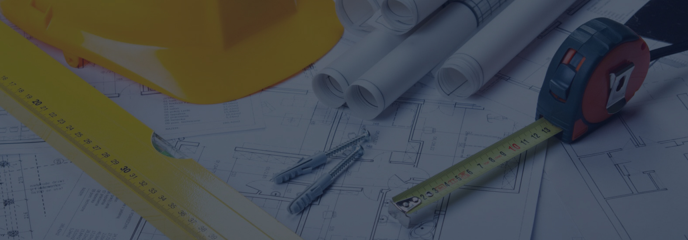
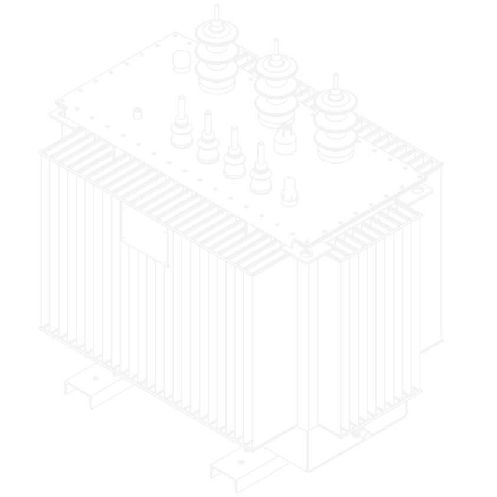

Проектирование
Наш опыт и знание современного электрооборудования позволит подобрать оптимальное техническое решение, а также произвести оптимизацию стоимости строительства.

Проектирование и согласование электроснабжения в МК «Линейщик»
Когда ваш бизнес остается всего лишь подключить к электросетям, необходимо предпринять решительные шаги. Ведь преодолеть все бюрократические проволочки достаточно непросто, особенно когда речь идет о подключении к сетям небольшого производства или малого бизнеса мощностью от 150 кВт. Впрочем, проектирование и согласование электроснабжения любых зданий, производственных помещений проводится в нашей компании с минимальными тратами вашего времени.
Работа нашей компании
Чтобы для наших клиентов не было лишних трат, мы работаем быстро и эффективно, охватывая область непосредственного проектирования и последующего согласования документации. Проекты прокладки силовых сетей 0,4-10кВ в земле, реконструкции ТП, установки КТПН, внутренних сетей электроснабжения – все это наша компания реализует в наиболее короткие сроки. Таким образом, проектирование и согласование электроснабжения отнимет гораздо меньше времени, если вы обратитесь непосредственно в нашу компанию – профессионализм сотрудников положительно сказывается на возможностях успешного подключения, поскольку документация оформляется правильно на 100%. Кроме того, мы ценим еще и время наших клиентов в том, что работа проводится нашими специалистами без задержек.
Разработка проектов электроснабжения в МК «Линейщик»
При подключении к электросетям проектирование и согласование электроснабжения идут рука об руку. Мало разработать проект электроснабжения, его еще необходимо согласовать в соответствующих структурах. Проект электроснабжения представляет собой своеобразную инструкцию для специалистов, которые впоследствии будут осуществлять электромонтажные работы. Кроме того, проектная документация определяет способ подачи электроэнергии ко всем устройствам на объекте. От того, насколько грамотно он будет разработан, зависит получение согласования, а также скорость, с которой ваше обращение будет рассмотрено и одобрено. Но самое главное грамотно составленный проект определяет общую энергоэффективность! Именно поэтому разработка проектов проводится исключительно специалистами с соответсвующими допусками.